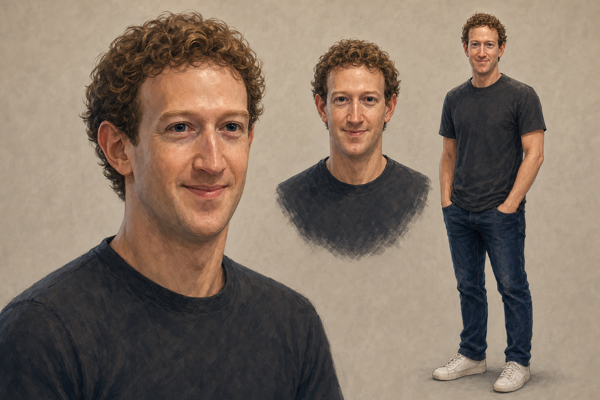

San Theft Auto / Art direction
Mark, in two styles.
The same character, wardrobe, and relaxed expression. Compare the face, proportions, and overall feel.
Painted

Loading painted study…
Cartoon

Loading cartoon study…
San Theft Auto / Art direction
The same character, wardrobe, and relaxed expression. Compare the face, proportions, and overall feel.

Loading painted study…
Loading cartoon study…